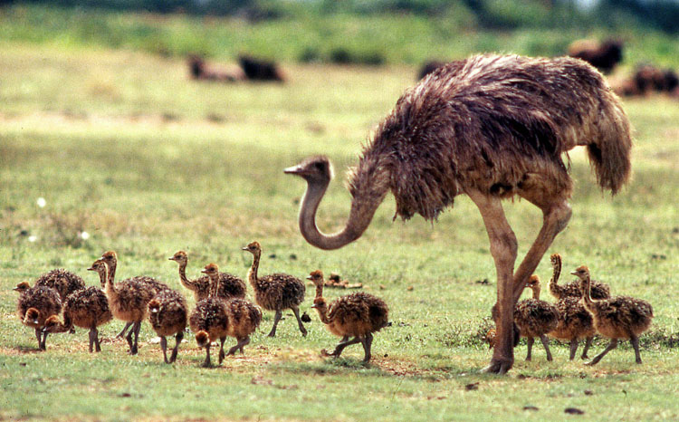
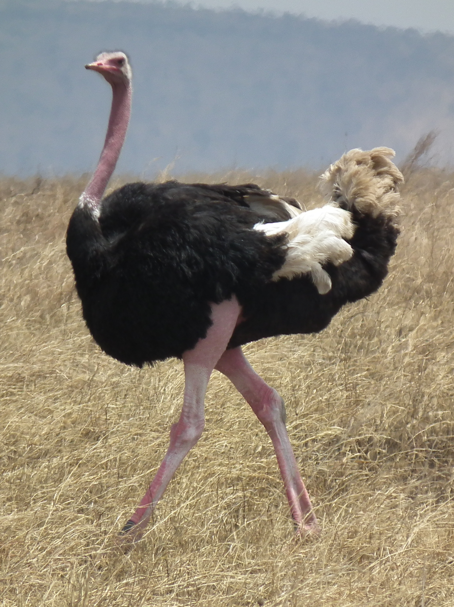

<%@language="vbscript"%>
<%Dim strname
strname=Session("Username")
Response.write("Welcome "&strname)
%>
Ostrich

The ostrich or common ostrich (Struthio camelus) is either one or two species of large flightless birds native to Africa, the only living member(s) of the genus Struthio, which is in the ratite family. In 2014, the Somali ostrich (Struthio molybdophanes) was recognized as a distinct species.
The ostrich shares the order Struthioniformes with the kiwis, emus, rheas, and cassowaries. However, phylogenetic studies have shown that it is the sister group to all other members of Palaeognathae and thus the flighted tinamous are the sister group to the extinct moa.It is distinctive in its appearance, with a long neck and legs, and can run at up to about 70 km/h (19 m/s; 43 mph),the fastest land speed of any bird.The ostrich is the largest living species of bird and lays the largest eggs of any living bird (extinct elephant birds of Madagascar and the giant moa of New Zealand laid larger eggs).
The ostrich's diet consists mainly of plant matter, though it also eats invertebrates. It lives in nomadic groups of 5 to 50 birds. When threatened, the ostrich will either hide itself by lying flat against the ground, or run away. If cornered, it can attack with a kick of its powerful legs. Mating patterns differ by geographical region, but territorial males fight for a harem of two to seven females.
The ostrich is farmed around the world, particularly for its feathers, which are decorative and are also used as feather dusters. Its skin is used for leather products and its meat is marketed commercially, with its leanness a common marketing point.